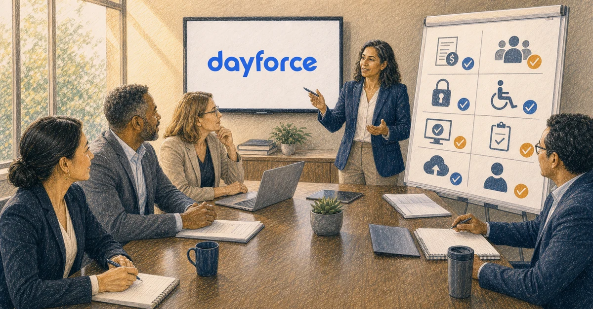

Government and education organizations do not implement human capital management in a vacuum. They operate through legislation, policies, collective agreements, civil-service rules, public budgets, accessibility obligations, security controls, and services that cannot simply stop during cutover.
The RFP and implementation plan should make those operating conditions visible before a product demonstration or proposal total becomes the center of the decision.
- Test Dayforce against real public-sector payroll and workforce scenarios.
- Put collective agreements, policy, accessibility, security, and auditability into the requirements.
- Separate product capability from implementation and customer readiness.
- Plan data, integrations, testing, training, cutover, and continuity as connected workstreams.
- Use pilots or phases only when entry, exit, and learning criteria are explicit.
- Require public-sector evidence from the named delivery team.
- Define who owns every decision across the vendor, partner, customer, and third parties.
Why public-sector HCM implementation is different
Public organizations vary widely. A city, university, school district, transit authority, public utility, healthcare entity, state agency, and federal department do not share one operating model.
They can, however, face several recurring conditions:
- Detailed payroll rules
- Union and collective-agreement requirements
- Multiple agencies, departments, funds, or bargaining units
- Budget and labor-cost controls
- Privacy and public-record obligations
- Accessibility and language requirements
- Formal procurement and contract governance
- Complex identity and security environments
- Legacy systems with long data histories
- Public scrutiny and audit requirements
- Essential services that require continuity
Treat these as scope drivers. Do not add “public sector experience” as one checkbox at the end of a generic RFP.
The sector's difficulty is documented rather than anecdotal. Abu Madi, Ayoubi and Alzbaidi report that ERP implementation failure in public higher education runs higher than in other sectors, and categorise the success factors that distinguish the exceptions.
A current public-sector Dayforce example
The Government of Canada's ongoing HR and pay transformation illustrates the breadth of readiness work involved in a large public environment.
Its Fall 2025 progress report describes:
- Cleaning and moving data from the legacy Phoenix system to Dayforce
- Keeping legacy data available during transition
- Using pilot organizations and phased waves
- Comparing Dayforce and legacy pay results for the same employees and periods
- Testing gross and net pay
- Building readiness criteria, playbooks, pre-onboarding checklists, communications, and workshops
- Advancing technology, data, policy, integration, and change activities together
The same report documents continuing work in 2026 on data governance, privacy, hypercare, deployment, training, user testing, accessibility, and integrations.
This is one federal program, not a template for every public organization. It is useful because it shows that product configuration is only one part of public-sector readiness.
1. Define the public mission and implementation outcomes
Start with the outcomes the system must support.
Examples include:
- Pay employees accurately and on time
- Improve HR-to-pay process consistency
- Give employees reliable access to information
- Strengthen labor-cost visibility
- Reduce manual processing and duplicate entry
- Improve audit evidence and accountability
- Support managers without weakening controls
- Protect personal and payroll information
- Maintain service continuity during transition
Connect every major requirement to an outcome. This prevents the RFP from becoming a feature inventory with no priority.
2. Inventory payroll and collective-agreement complexity
Public-sector payroll requirements often extend across bargaining units, job classes, schedules, premiums, allowances, seniority, leave, retroactivity, pensions, and policy.
Build a scenario inventory that includes:
- Bargaining units and collective agreements
- Civil-service or merit-system rules
- Pay plans, grades, steps, and progression
- Multiple assignments and acting roles
- Premiums, differentials, overtime, and call-back
- Seasonal, temporary, elected, appointed, and contingent workers
- Leave and accrual rules
- Union dues and benefit deductions
- Retroactive contract changes
- Pension and retirement reporting
- Grants, projects, funds, and labor distribution
- Off-cycle and emergency payments
Require vendors and partners to demonstrate how the proposed design handles representative scenarios. A feature-level answer is not enough.
3. Translate policy into approved requirements
The implementation team should not interpret policy informally during configuration.
For each rule, identify:
- Governing legislation, regulation, policy, or agreement
- Business owner
- Current process
- Required future-state outcome
- Effective dates
- Exceptions
- Evidence and approval
- Configuration or process dependency
- Test scenarios
When the requirement is ambiguous, route it to the authorized policy, legal, labor-relations, payroll, or governance owner before build.
The partner can help structure the decision. It should not invent the customer's policy.
4. Establish data governance before migration
Public organizations may have decades of records spread across systems, agencies, spreadsheets, archives, and third parties.
Before migration, decide:
- Which system owns each data element
- Which history must move into Dayforce
- Which records remain in a secure archive
- Which retention schedules apply
- Who can access sensitive information
- How duplicate identities will be resolved
- How organizations, positions, jobs, funds, and cost centers map
- Who approves cleanup and transformations
- How final results will be reconciled
Use a domain-based ownership model and the controls in a Dayforce data-migration checklist once that article is published.
5. Define privacy and security requirements
Security requirements should shape design, data, integrations, environments, and support from the beginning.
Address:
- Data classification
- Role-based access
- Segregation of duties
- Privileged administration
- Identity and access management
- Encryption
- Logging and monitoring
- Environment access
- Vendor and partner access
- Incident response
- Data sharing
- Retention and disposal
- Jurisdictional or organizational hosting requirements
- Security and privacy assessments
Require evidence appropriate to the organization's policies and procurement rules. Avoid relying on broad security statements that do not map to the proposed operating model.
6. Make accessibility part of acceptance
Accessibility should be tested through real tasks and user groups, not treated as a document attached to the RFP.
Define:
- Applicable organizational and legal standards
- Employee and manager tasks to test
- Assistive technologies and browsers
- Document and communication accessibility
- Training accessibility
- Mobile and shared-device use
- Accommodation and support processes
- Issue severity and remediation
- Acceptance evidence
Include employees with different access needs in user testing. The Canadian public-sector program's current work includes user testing intended to improve usability and accessibility, which reinforces the need to treat both as implementation activities.
7. Scope the complete public-sector system map
The implementation may depend on:
- Finance and enterprise resource planning
- Pension and retirement systems
- Banking and payment services
- Tax and statutory reporting
- Identity and directory services
- Time collection and scheduling
- Learning and talent systems
- Benefits providers
- Labor-costing and grant systems
- Data warehouses and public reporting
- Case management
- Legacy HR and payroll
For every interface, define business purpose, source, destination, fields, timing, security, errors, monitoring, testing, third parties, deployment, and steady-state support.
Align's integration services can help convert a system inventory into a delivery and ownership plan.
8. Build a public-sector testing strategy
Testing should cover product behavior and the operating chain around it.
| Test level | What it should prove |
|---|---|
| Unit | Individual configuration and rules behave as designed |
| Integration | Data moves completely, securely, and on time |
| End to end | A real event completes across HR, time, payroll, finance, and third parties |
| Payroll parallel | Dayforce and legacy results reconcile within approved tolerances |
| Security | Roles, privileges, and sensitive access follow policy |
| Accessibility | Users can complete representative tasks |
| Performance | Peak and high-volume processes meet requirements |
| User acceptance | Authorized business users approve the future-state process |
| Cutover rehearsal | People, timing, dependencies, and contingency procedures work together |
Include routine work and difficult public-sector scenarios. Track defects by severity, owner, root cause, resolution, retest, and approval. Review the complete Dayforce payroll parallel-testing checklist once published.
9. Decide how pilots and phases will work
A pilot or phased rollout can reduce the number of employees exposed at once and create useful learning. It can also prolong dual-system operation and create inconsistent experiences.
Define:
- Why the pilot population is representative
- What risks it is intended to reduce
- Entry criteria
- Success measures
- Exit criteria
- Duration
- Support model
- Data and integration boundaries
- What can change before the next wave
- How lessons will be approved and reused
- When legacy processes retire
Do not call a deployment a pilot if the organization has no ability to change the next wave based on results.
10. Protect service and payroll continuity
Public services and employee pay cannot depend on optimistic cutover assumptions.
Flyvbjerg and Budzier found that one in six of 1,471 IT projects overran cost by roughly 200 percent. A continuity plan exists to absorb that tail, not the average case.
Build a continuity plan that addresses:
- Final legacy and Dayforce processing
- Data freeze and delta loads
- Payroll decision deadlines
- Payment and banking contingencies
- Essential workforce scheduling
- Integration outages
- Manual procedures
- Escalation and command structure
- Employee communication
- Vendor and partner availability
- Rollback or controlled delay
- Hypercare staffing
Define who has authority to proceed, delay, or activate a contingency.
11. Prepare employees, managers, and administrators
Public-sector change management must reach varied populations, locations, schedules, languages, roles, and levels of digital access.
A 60-year review of change research found that recipients' reactions track how a change process is run — participation, communication, and perceived fairness — as much as the content of the change, which is what a readiness model has to address.
Use a readiness model that includes:
- Stakeholder and impact analysis
- Leadership alignment
- Union and employee engagement as required
- Process-owner preparation
- Role-based training
- Manager practice
- Employee communications
- Accessible learning
- Support channels
- Local champions
- Readiness measures
- Post-launch reinforcement
Dayforce's implementation guidance emphasizes training users and supporting employees after launch. Align's training services can help connect product learning to the organization's future-state processes.
12. Make procurement and scope comparable
Require every bidder to answer the same operating scenarios and scope structure.
The RFP should distinguish:
- Software
- Vendor services
- Authorized implementation services
- Client-side advisory work
- Third-party services
- Customer responsibilities
- Optional work
- Hypercare
- Ongoing support
Use the Dayforce partner RFP scorecard and normalize price using the Dayforce implementation cost drivers once that article is published.
Do not award points for public-sector logos alone. Ask which named team members delivered comparable work and what role they performed.
13. Build auditability into the project
Preserve the evidence behind consequential decisions.
The project record should include:
- Approved requirements
- Policy interpretations
- Design decisions
- Data mappings and transformations
- Security and privacy approvals
- Test evidence
- Defects and dispositions
- Readiness assessments
- Scope changes
- Go-live recommendation
- Executive approvals
- Hypercare transition
Auditability supports governance during the project and helps future teams understand why the system operates as it does.
14. Plan hypercare and steady-state ownership
Go-live changes the type of work. It does not end it.
Define:
- Hypercare duration and staffing
- Payroll and critical-process coverage
- Severity and response model
- Employee support
- Defect versus enhancement rules
- Vendor and partner escalation
- Daily or pay-cycle governance
- Knowledge transfer
- Documentation
- Release support
- Optimization backlog
- Transition to permanent ownership
Review Align's post-go-live support before the implementation agreement is signed.

Public-sector readiness spans payroll, policy, data, security, accessibility, integrations, testing, continuity, and governance. Original Align HCM illustration.
Public-sector readiness scorecard
Score each area from 1 to 5 and require evidence beside the number.
| Readiness area | Weight | Evidence |
|---|---|---|
| Payroll and labor-rule requirements | 15 | |
| Policy and process ownership | 10 | |
| Data governance and conversion | 10 | |
| Privacy and security | 10 | |
| Accessibility and user experience | 10 | |
| Integrations and technical operations | 10 | |
| Testing and payroll comparison | 10 | |
| Deployment and continuity | 10 | |
| Change, training, and readiness | 5 | |
| Procurement and commercial clarity | 5 | |
| Auditability and governance | 5 | |
| Total | 100 |
Set mandatory minimums for payroll, security, accessibility, data, and continuity. A strong average should not hide a critical weakness.
Public-sector Dayforce RFP questions
- Which public-sector payroll, workforce, and labor scenarios has the proposed team supported?
- How will policy and collective-agreement requirements become approved configuration?
- Who owns data cleanup, mapping, reconciliation, retention, and signoff?
- How will privacy, security, and privileged access be validated?
- How will accessibility be tested through representative user tasks?
- Which integrations and third parties are included?
- How will payroll parallel testing be structured by pay group and rule set?
- What evidence is required to pass each test phase?
- How will a pilot or phased rollout reduce risk?
- What continuity and contingency procedures protect payroll and essential services?
- What customer capacity is required by phase and role?
- How will managers, administrators, employees, and support teams become ready?
- Which deliverables, assumptions, exclusions, and acceptance criteria govern the work?
- What hypercare and steady-state support are included?
- How will decisions, changes, defects, and approvals remain auditable?
Public-sector implementation red flags
- Public-sector fit is supported only by logos.
- Product features replace payroll and policy scenarios.
- The customer responsibility model is vague.
- Data retention and legacy access are unresolved.
- Accessibility is limited to a general compliance statement.
- Integration monitoring and support are out of scope.
- Parallel testing has no pay-group coverage or exit criteria.
- A pilot has no learning or expansion rules.
- The cutover plan assumes every dependency succeeds.
- Hypercare begins after the most important payroll decisions.
- The project cannot show who approved a consequential design choice.
How Align HCM can help
Align HCM supports Dayforce customers across implementation planning, client-side governance, data conversion, integrations, testing, training, change readiness, go-live support, and optimization.
The work can be scoped around the public organization's operating model, procurement boundary, internal capacity, and delivery risks.
Contact Align HCM for a free, no-obligation public-sector Dayforce implementation-readiness assessment.
Frequently asked questions
Dayforce identifies public sector as one of the industries it serves. Public organizations should still evaluate product, implementation, security, accessibility, data, support, and operating fit against their own requirements.
Common factors include collective agreements, civil-service or policy rules, complex payroll, public procurement, accessibility, security, auditability, multiple agencies, and continuity of public services.
A phased rollout can reduce exposure and create learning, but it can also extend dual-system operations. The decision should follow risk, dependencies, population design, entry criteria, exit criteria, and the ability to apply lessons.
Test configuration, integrations, end-to-end processes, security, accessibility, payroll comparisons, performance, user acceptance, cutover, and contingency procedures using representative populations and scenarios.
Align HCM provides Dayforce, client-side, data, integration, testing, training, support, and optimization services. The exact role should be confirmed for the organization's procurement and delivery model.
Conversion CTA
Ask Align HCM to assess your public-sector Dayforce implementation readiness.